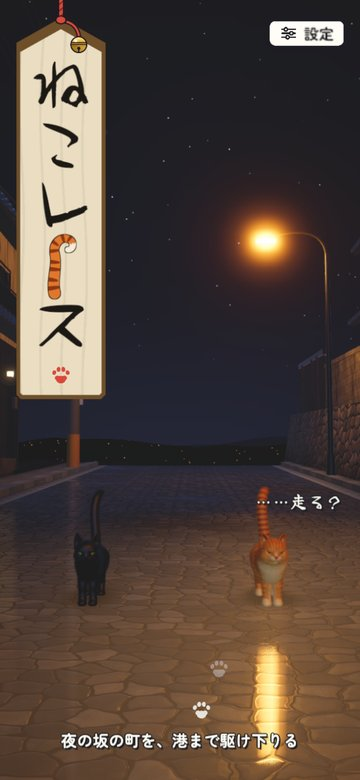
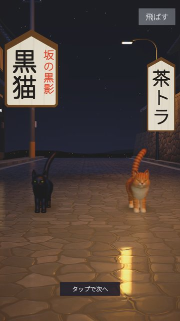
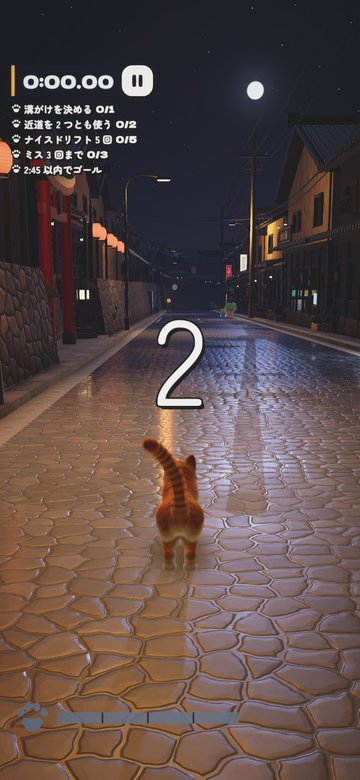
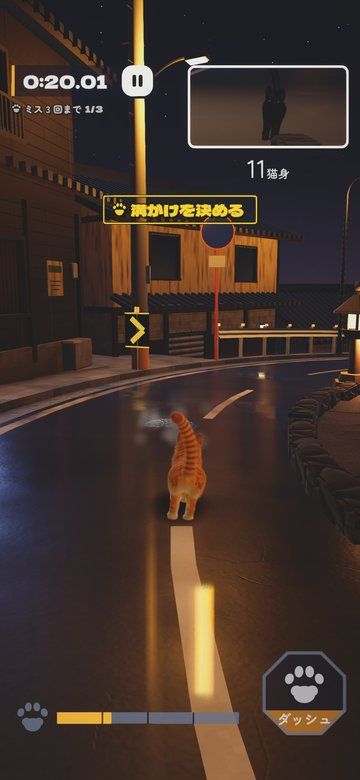
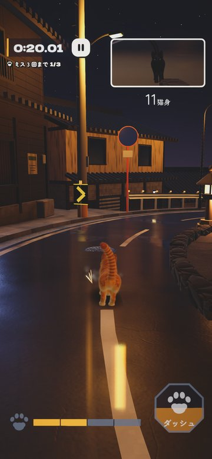
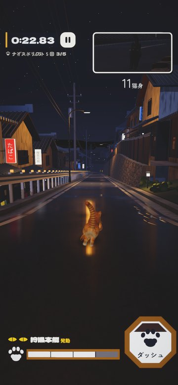

猫が夜の坂を駆け下りる。「ねこレース」を作っています
こんにちは、maosun です。
じつはいま、猫のレースゲーム「ねこレース」を作っています！ これまで作ってきた中で、いちばん大きな作品です。Unity（3Dのゲームを作る道具）を使って、一から作っています。
まだ公開前なのですが、作っている途中のようすを、ちょっとだけお見せしますね。iPhone 版から出す予定です。


どんなゲーム？
あなたは茶トラの猫。ライバルの猫と1対1で、町の中をかけっこします。
コースはひとつではありません。最初の舞台は、街灯がともる夜の坂の町。石だたみの坂を、港まで一気に駆け下ります。勝ち進んでいくと、時間も季節もちがう、いろいろな景色の中を走ることになります。どんな場所を走るのかは、遊んでからのお楽しみに。
相手との差は「猫身（ねこみ）」で数えます。鼻先からお尻まで、猫1匹ぶんの長さのことです。「あと3猫身！」なんて出ると、追いかけるほうも逃げるほうも、つい力が入ります。
最初のライバルは黒猫
はじめに戦う相手は、夜の坂の町を縄張りにしている黒猫。二つ名（あだ名）は「坂の黒影」です。ちょっと無口で、クールなやつです。


レースの前には、短いやりとりがあります。勝つと、黒猫がぼそっとひとこと返してくれますよ。
黒猫に勝つと、その先には新しいライバルが待っています。だれが出てくるかは、ないしょです。
走っていて気持ちいいこと
いちばんこだわっているのは、走っていて気持ちいいかどうかです。iPhone で走っては「ここ、もうちょっと…」と直す、を毎日くりかえしています。


- ドリフト：角で体をすべらせて曲がります。内側をうまく攻めるほど、ダッシュのゲージがぐんぐんたまります
- 溝がけ：道ばたの側溝に足を掛けて、スピードを落とさずに曲がる技です。ちょっとむずかしいけれど、決まったときは本当に気持ちいいです
- 狩猟本能：相手の真後ろにぴったり付いていると、青い光といっしょに小さなダッシュが出ます。抜くならこのタイミング！
- 近道：町のあちこちに、ふつうの道より速い抜け道がかくれています


右上の小さな窓は、バックミラーです。後ろからライバルが迫ってくる顔が映るので、逃げているときはドキドキします。


操作は2種類から選べます。ドリフトを自分で決める「A」と、ドリフトをおまかせにできる「B」です。レースゲームがはじめての人も、B なら安心して走れます。


ランクと二つ名
ライバルごとに、5つの「お題」があります。黒猫のコースなら「溝がけを決める」「近道を2つとも使う」「ナイスドリフト5回」といった感じです。
勝ったレースでお題をいくつ同時にクリアできたかで、ランクが EX・S・A・B に決まります。EX は5つ全部。なかなか手ごわいですよ。
走り方によって、あなたの茶トラにも二つ名が増えていきます。集めた中から、お気に入りの二つ名を名乗れます。
出たらお知らせします
猫の体は、Blender（3Dの形を作る道具）で自分で作りました。動物を作るのははじめてで、猫らしく見えるまで、何度も何度も作り直しました。
公開はもう少し先になりそうです。出せるようになったら、このブログでお知らせしますね。楽しみに待っていてもらえたらうれしいです！